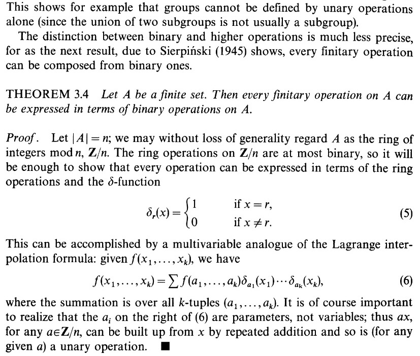
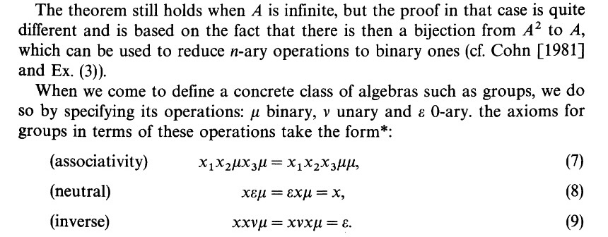

st_is_empty(): Distinguishes between, e.g., POINT EMPTY and POINT(0 0)
st_dimension(): NA for empty versions, otherwise
2 for surfaces (POLYGON, MULTIPOLYGON)
1 for lines (LINESTRING, MULTILINESTRING)
0 for points (POINT, MULTIPOINT)
The Bad Kind of Overthinking: Will My Life Just Get Harder and Harder?
Unary Operations
Binary Operations
Ternary Operations
Quaternary Operations
Good News and Bad News
The good news: No!
The bad news: You’ll have to read the 465-page Volume I and then the 451-page Volume II and then to page 15 of Volume III of Cohn (1965) to know why:


(i spent 4 yrs of undergrad studying abstract algebra and now it all sits gathering dust somewhere deep within my brain plz just let me have this moment i’ll never mention it again i promise)
The Good Kind of Overthinking…
For fancier geospatial operations, we’ll need to start overthinking, about the possible relationships between two (or more) geometries! \(\leadsto\) Relational Predicates: